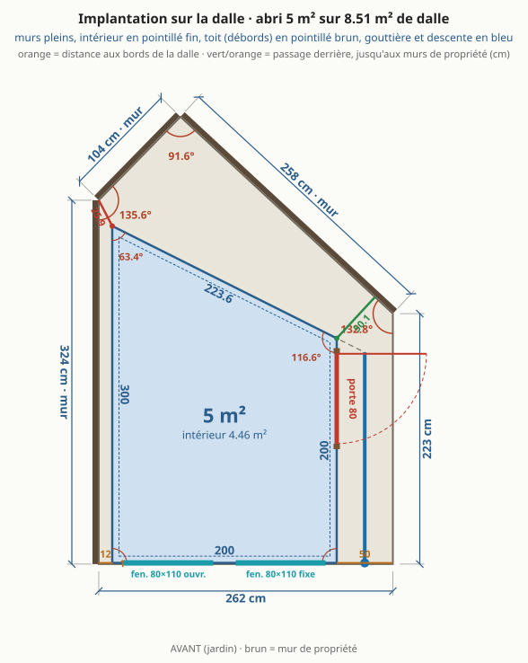
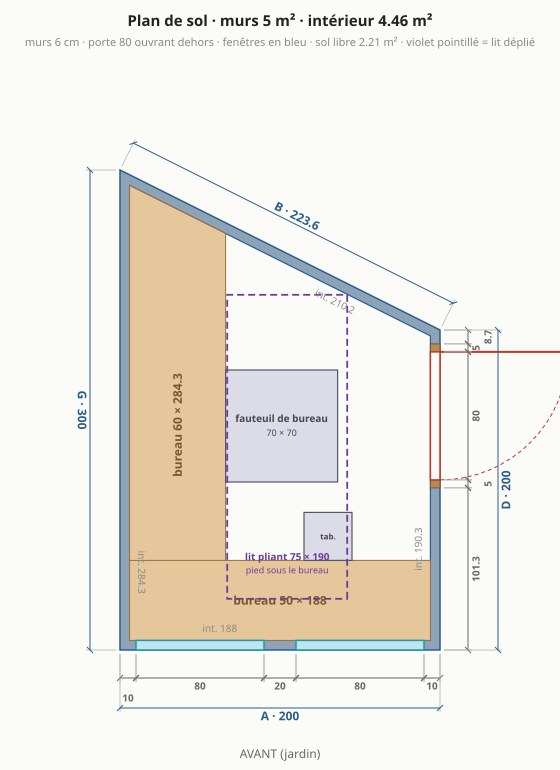
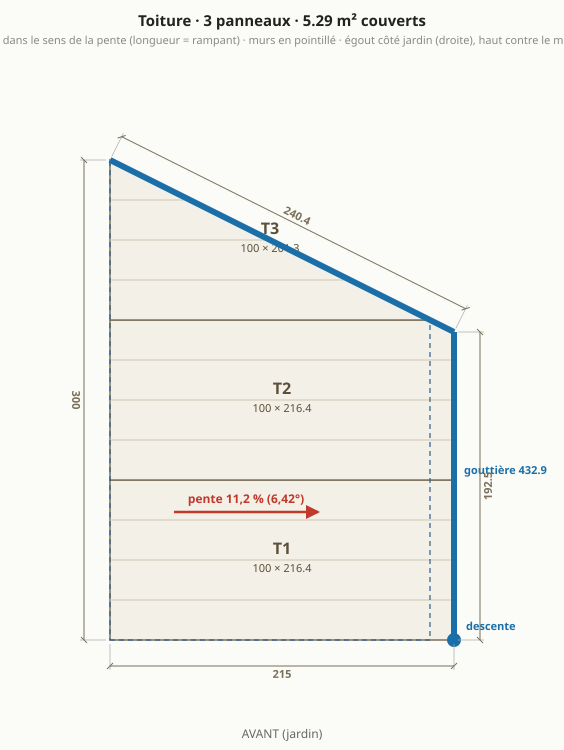
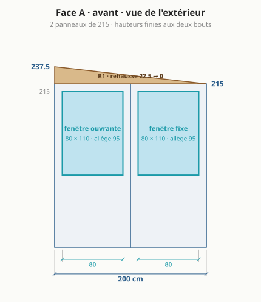
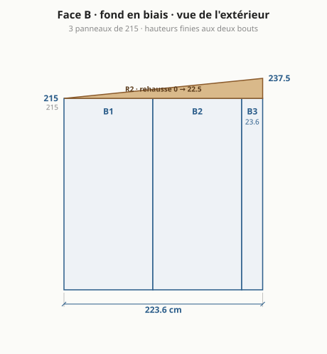
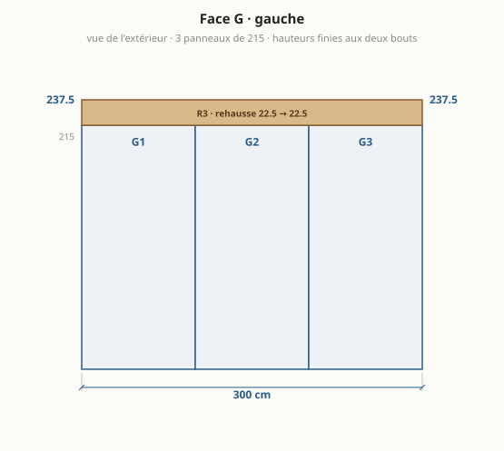
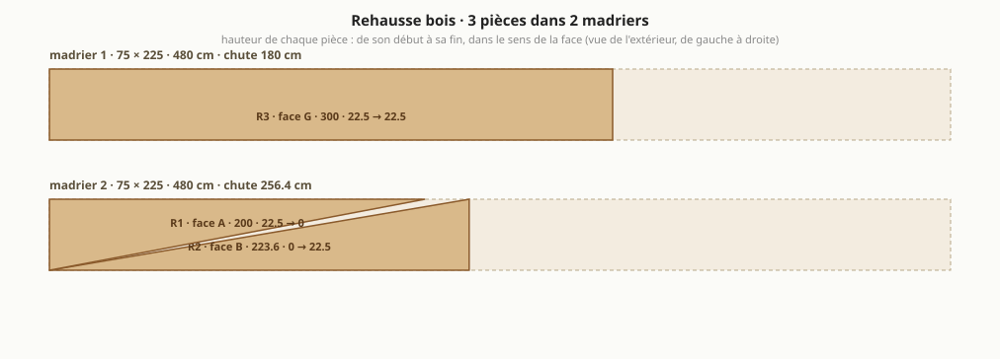

Abri de jardin : le bureau trapèze, version 2 (calée sur les panneaux)
Généré par
npm run emitdepuisparams.json(blocabri_v2) etsite/src/compute.ts: ne pas éditer à la main. Version de départ : abri.md. Autres formes étudiées : variantes.md.

Ce qui change par rapport à la version 1
| version 1 (abri.md) | version 2 | |
|---|---|---|
| murs (extérieur) | 5,37 m² | 5 m² |
| intérieur | 4,81 m² | 4,46 m² |
| emprise au sol (débords de toit exclus, R*420-1) | 5,37 m² | 5 m² |
| formalités (seuils 5 puis 20 m²) | déclaration préalable | aucune formalité |
| côtés A · D · B · G | 218 · 178,8 · 256,6 · 314,1 cm | 200 · 200 · 223,6 · 300 cm |
| faces en panneaux entiers | aucune | A, D, G |
| bandes de mur de moins de 30 cm | 2 | 1 |
| panneaux de mur à commander | 10 | 10 |
| passage derrière l'abri | 50,6 cm | 50,1 cm |
| sens du toit | vers le fond (mur de propriété) | vers la droite (jardin) |
| pente | 9,6 % (5,46°), chute 30 cm | 11,2 % (6,42°), chute 22,5 cm |
| portée du toit sans panne | 3,14 m | 2 m |
| panneaux de toit | 3, dont 3 coupé(s) en biais et 1 de moins de 30 cm de large | 3, dont 2 coupé(s) en biais et 0 de moins de 30 cm de large |
| gouttière et descente | mur du fond, descente au coin arrière gauche | mur droit, descente devant côté jardin |
| rehausse | 4 pièces, 2 madrier(s) 75 × 300 | 3 pièces, 2 madrier(s) 75 × 225 |
| hauteurs finies des coins | 245 · 245 · 227,9 · 215 cm | 237,5 · 215 · 215 · 237,5 cm |
| porte | 65 × 205, débord de toit au-dessus : 0 cm | 80 × 205, débord de toit au-dessus : 25 cm |
| fenêtres en façade | 100 fixe | 80 ouvrante + 80 fixe |
| sol libre hors bureaux | 2,41 m² | 2,21 m² |
| lit | 75 × 190, rabattable contre le fond | 75 × 190, pliant, posé au sol libre |
| budget indicatif HT | 3 960 € (coque 3 364 €) | 4 155 € (coque 3 574 €) |
Ce que la version 2 perd
- 0,35 m² d'intérieur en moins (4,46 au lieu de 4,81 m²), pris surtout dans le coin aigu du fond, la surface la moins utile.
- Le lit rabattable contre le fond ne tient plus : un lit de 190 plaqué contre le mur en biais demande un mur d'au moins 244 cm (le coin aigu et le coin obtus mangent chacun leur part), et le fond ne fait plus que 224 cm. La version 2 garde un lit pliant de 75 × 190 posé au sol libre, sièges rangés (
lit_pliant.contrevide). Garder le lit rabattable impose un fond de 244 cm au moins, donc de sortir du module ou du seuil de 5 m². - Bureau gauche plus court de 13 cm (284 au lieu de 297 cm) : sans effet, aucun siège n'atteint le bout.
- Un peu plus chère (voir la ligne budget du tableau) : l'écart vient de la deuxième fenêtre, ouvrante. À fenêtres égales la coque de la version 2 coûte moins (madrier courant, toit plus court).
Pourquoi
- Trois murs au module de 100 (façade 200, droite 200, gauche 300) : la façade et le mur gauche ne sont que des panneaux entiers. Le mur gauche longe le mur de propriété à 12 cm : une fois monté, on n'y accède plus, il ne doit porter aucune recoupe. La seule bande à recouper est sur le fond en biais, qu'on atteint par le passage.
- 5,00 m² de murs : au seuil sans formalité (emprise et plancher ≤ 5 m²), au lieu d'une déclaration préalable pour 0,37 m² de murs en plus. Le prix : 0,35 m² d'intérieur en moins, pris surtout dans le coin aigu du fond.
- Abri avancé de 4 cm (bande libre avant 1 au lieu de 5) : la porte n'est plus en façade, cette bande ne sert plus. Le passage derrière l'abri retrouve 50 cm.
- Toit vers la droite, côté jardin, au lieu du fond : gouttière et descente accessibles tous les jours, récupérateur d'eau possible, plus une goutte dans le passage arrière ni au pied du mur de propriété (aujourd'hui toute l'eau du toit arrive au coin le plus enfermé).
- Portée du toit 2,0 m au lieu de 3,1 m : les panneaux vont du mur gauche au mur droit. C'était l'hypothèse la plus fragile du projet (H6).
- Chute 22,5 cm sur 2 m = 11 % : le madrier courant 75 × 225 suffit, plus besoin d'un 75 × 300 introuvable en stock. Le mur droit (porte) ne reçoit aucune rehausse, le mur gauche aveugle est le mur haut.
- Toit en 3 panneaux de 100 de large, sans bande étroite (la version 1 a un panneau de toit de 18 cm) : T1 entier, T2 écorné d'un petit coin sous le débord, T3 coupé une fois en biais le long du fond. Rives avant et fond affleurantes, fermées par une bavette.
- Débord de 25 cm à droite : il abrite la porte, qui n'a aucun auvent dans la version 1.
- Porte de 80 : une porte de service standard (un fauteuil de bureau ne passe pas dans 65, et un bloc vitré de 65 est du sur-mesure). Elle tient entièrement dans le deuxième module du mur droit : le panneau D1 reste entier, le cadre bois fait office de poteau d'angle.
- Deux fenêtres de 80, une par panneau entier de façade, l'ouvrante à gauche : en diagonale de la porte pour la ventilation traversante.
Conseils que les plans ne montrent pas
- Lit rabattable et bureaux sur pieds ou équerres au sol : les parements acier de 0,5 mm ne reprennent pas une charge suspendue. Les fixations murales ne tiennent le lit que replié.
- Arrêter le bureau gauche vers 220 cm et mettre un meuble haut dans le coin aigu du fond : aucun siège n'atteint le bout du plateau.
- Monter le mur gauche à plat puis le lever (3 panneaux + rehausse, environ 80 kg) : à 12 cm du mur de propriété, aucune visseuse ne passe. Fermer ce vide par une bavette devant et un grillage au fond (feuilles, nids).
- Store sur les fenêtres de façade plutôt que sur la porte : ce sont elles qui font face aux écrans. À dimensionner selon l'orientation réelle.
- Porte ferrée côté fond : ouverte, elle s'efface vers l'arrière quand on arrive du jardin. Deux ou trois dalles de jardin en guise de seuil, la dalle s'arrêtant au ras du mur droit.
- À exactement 5,00 m², une mairie pointilleuse peut discuter : raccourcir le mur gauche à 298 donne 4,98 m² pour une recoupe de 2 cm.
En bref
- Dalle existante : 8,51 m², côtés 262 / 223 / 258 / 104 / 324 cm, murs de propriété à gauche et au fond.
- 4,46 m² intérieur (5 m² de murs), 50,1 cm de passage derrière.
- 4 murs en panneaux sandwich 6 cm autoportants : façade 200, droite 200, fond en biais 223,6, gauche 300 cm.
- Toit mono-pente vers la droite (jardin), 6,42° : 237,5 cm contre le mur gauche, 215 cm côté porte.
- Porte 80 × 205 sur le mur droit, 2 fenêtres en façade, bureau en L sur la façade et le mur gauche.
- Budget indicatif : 3 532 € à 4 778 € HT (coque 3 574 €, aménagement 581 €).
- Formalités : emprise au sol 5 m², surface de plancher 4,46 m² ⇒ aucune formalité.
À trancher
- Toit : vers la droite (jardin), chute 22,5 cm (6,42°). Madrier 75 × 225 classe 4 : section courante, à vérifier en classe 4.
- Formalités : emprise au sol 5 m² (les débords de toit, simples et en l'air, n'entrent pas dans l'emprise au sol : Code de l'urbanisme R*420-1), surface de plancher 4,46 m² ⇒ aucune formalité (seuils 5 puis 20 m²). secteur protégé ou abords d'un monument historique : déclaration préalable même sous le seuil ; le PLU (implantation, hauteur, distance aux limites) s'applique dans tous les cas.
- Lit 75 × 190 : déplié au milieu, le pied sous un bureau, fauteuil et tabouret rangés.
- Portée du toit (~2 m au plus long) en 6 cm sans panne : à confirmer dans le tableau du fabricant.
- Angles non droits (116,6°, 63,4°) : profils d'angle pliés sur mesure.
Plans
Implantation sur la dalle
Plan de sol

Toiture

Face A · façade (jardin)

Face D · droite (porte)

Face B · fond en biais

Face G · gauche

Rehausse bois : débit des madriers

Dimensions
| face | longueur ext. | longueur int. | hauteur finie (début → fin) | angle au début |
|---|---|---|---|---|
| A · avant | 200 cm | 188 cm | 237,5 → 215 cm | 90° |
| D · droite | 200 cm | 190,3 cm | 215 → 215 cm | 90° |
| B · fond en biais | 223,6 cm | 210,2 cm | 215 → 237,5 cm | 116,6° |
| G · gauche | 300 cm | 284,3 cm | 237,5 → 237,5 cm | 63,4° |
Murs 5 m² · intérieur 4,46 m² (murs de 6 cm retirés) · sol libre hors bureaux 2,21 m² · hauteur sous plafond 2,32 m devant, 2,09 m au plus bas (plancher isolé déduit).
Débit
Panneaux de mur (hauteur 215 cm, pose verticale)
| pièce | largeur | provenance | découpe |
|---|---|---|---|
| A1 | 100 cm | panneau entier | fenêtre 80 × 110 |
| A2 | 100 cm | panneau entier | fenêtre 80 × 110 |
| D1 | 100 cm | panneau entier | – |
| D2 | 100 cm | panneau entier | porte 90 × 210 |
| B1 | 100 cm | panneau entier | – |
| B2 | 100 cm | panneau entier | – |
| B3 | 23,6 cm | panneau recoupé | – |
| G1 | 100 cm | panneau entier | – |
| G2 | 100 cm | panneau entier | – |
| G3 | 100 cm | panneau entier | – |
10 panneaux de mur de 100 × 215 à commander (les bandes étroites sortent des chutes).
Panneaux de toit (dans le sens de la pente, longueur = rampant)
| pièce | largeur | longueur à commander | coupe |
|---|---|---|---|
| T1 | 100 cm | 226,4 cm | entier, coupes droites |
| T2 | 100 cm | 226,4 cm | un bord en biais le long du mur du fond |
| T3 | 100 cm | 201,3 cm | un bord en biais le long du mur du fond |
Débords : 25 cm à droite (égout, au-dessus de la porte), 0 cm contre le mur de propriété, rives avant et fond affleurantes (bavette de rive). Surface couverte 5,48 m².
Rehausse bois (madrier 75 × 225, stock 480 cm)
| pièce | face | longueur | hauteur début → fin |
|---|---|---|---|
| R1 | A | 200 cm | 22,5 → 0 cm |
| R2 | B | 223,6 cm | 0 → 22,5 cm |
| R3 | G | 300 cm | 22,5 → 22,5 cm |
2 madriers : n°1 = R3 (chute 180 cm) ; n°2 = R2 + R1 (chute 256,4 cm). Deux pièces sur un même tronçon = une seule coupe en biais.
Gouttière et profils
- Gouttière 187,5 cm le long du mur droit, au-dessus de la porte ; descente au coin avant droit, côté jardin (récupérateur d'eau possible). Aucune eau dans le passage arrière ni au pied du mur de propriété.
- 4 angles : G/A 90°, A/D 90°, D/B 116,6°, B/G 63,4° ; hauteur de chaque angle = hauteur finie du coin.
- Rail de pied sur tout le périmètre (9,24 m), bavettes de rive sur les côtés A et B.
Ouvertures
| ouverture | taille | où | détail |
|---|---|---|---|
| porte vitrée | 80 × 205 (cadre 90 × 210) | face D, de 106,3 à 186,3 cm depuis la façade | ouvre vers l'extérieur ; cadre à 5 cm du mur du fond (face intérieure) et sous le haut du mur |
| fenêtre oscillo-battante | 80 × 110 | face A, de 10 à 90 cm depuis le coin gauche | allège 95 cm, au-dessus du bureau, dans un seul panneau |
| fenêtre fixe | 80 × 110 | face A, de 110 à 190 cm depuis le coin gauche | allège 95 cm, au-dessus du bureau, dans un seul panneau |
Aménagement
| élément | taille | place |
|---|---|---|
| bureau gauche | 60 × 284,3 cm | tout le mur gauche |
| bureau de façade | 50 × 188 cm | tout le mur de façade |
| fauteuil de bureau | 70 × 70 cm | devant le bureau gauche |
| tabouret | 30 × 30 cm | devant le bureau de façade |
| lit pliant (déplié) | 75 × 190 cm | au milieu, pied sous un bureau, sièges rangés |
Budget indicatif (HT, fourniture seule)
| poste | quantité | prix unitaire | montant |
|---|---|---|---|
| Panneaux sandwich mur 60 mm (à commander) | 21,5 m² | 35 € | 752 € |
| Surcoût fixation cachée (mur) | 21,5 m² | 5 € | 108 € |
| Panneaux sandwich toit 60 mm (à longueur) | 6,54 m² | 35 € | 229 € |
| Rehausse bois (madriers 75 × 225) | 9,6 ml | 10 € | 96 € |
| Porte vitrée + cadre | 1 u | 900 € | 900 € |
| Fenêtre fixe | 1 u | 200 € | 200 € |
| Fenêtre ouvrante | 1 u | 320 € | 320 € |
| Profils (angles int. + ext., rail de pied, rives) | 31,6 ml | 12 € | 379 € |
| Visserie + étanchéité | 1 forfait | 160 € | 160 € |
| Gouttière + descente | 1 forfait | 130 € | 130 € |
| Ventilation | 1 forfait | 150 € | 150 € |
| Livraison des panneaux | 1 forfait | 150 € | 150 € |
| Plancher isolé | 4,46 m² | 45 € | 201 € |
| Électricité (multiprise, éclairage) | 1 forfait | 80 € | 80 € |
| Chauffage | 1 forfait | 120 € | 120 € |
| Store | 1 forfait | 60 € | 60 € |
| Finition intérieure | 1 forfait | 120 € | 120 € |
| coque | 3 574 € | ||
| aménagement | 581 € | ||
| total | 4 155 € (3 532 € à 4 778 €, ±15 %) |
Prix médians du marché, à confirmer par devis (prix_indicatifs_eur). Porte et fenêtres au prix des blocs standard.